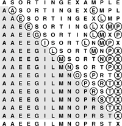

C++ Programming Robert Sedgewick - Princeton University Addison Wesley Professional Algorithms in C++, Parts 1–4: Fundamentals, Data Structure, Sorting, Searching, Third Edition
6.4. Bubble Sort
The first sort that many people learn, because it is so simple, is bubble sort: Keep passing through the file, exchanging adjacent elements that are out of order, continuing until the file is sorted. Bubble sort's prime virtue is that it is easy to implement, but whether it is actually easier to implement than insertion or selection sort is arguable. Bubble sort generally will be slower than the other two methods, but we consider it briefly for the sake of completeness.
Suppose that we always move from right to left through the file. Whenever the minimum element is encountered during the first pass, we exchange it with each of the elements to its left, eventually putting it into position at the left end of the array. Then on the second pass, the second smallest element will be put into position, and so forth.
Program 6.4. Bubble sort|
For each i from l to r-1, the inner (j) loop puts the minimum element among the elements in a[i], . . ., a[r] into a[i] by passing from right to left through the elements, compare–exchanging successive elements. The smallest one moves on all such comparisons, so it "bubbles" to the beginning. As in selection sort, as the index i travels from left to right through the file, the elements to its left are in their final position in the array.
template <class Item>
void bubble(Item a[], int l, int r)
{ for (int i = l; i < r; i++)
for (int j = r; j > i; j--)
compexch(a[j-1], a[j]);
}
|
Thus, N passes suffice, and bubble sort operates as a type of selection sort, although it does more work to get each element into position. Program 6.4 is an implementation, and Figure 6.4 shows an example of the algorithm in operation.
Small keys percolate over to the left in bubble sort. As the sort moves from right to left, each key is exchanged with the one on its left until a smaller one is encountered. On the first pass, the E is exchanged with the L, the P, and the M before stopping at the A on the right; then the A moves to the beginning of the file, stopping at the other A, which is already in position. The ith smallest key reaches its final position after the ith pass, just as in selection sort, but other keys are moved closer to their final position, as well.

We can speed up Program 6.4 by carefully implementing the inner loop, in much the same way as we did in Section 6.3 for insertion sort (see Exercise 6.25). Indeed, comparing the code, Program 6.4 appears to be virtually identical to the nonadaptive insertion sort in Program 6.1. The difference between the two is that the inner for loop moves through the left (sorted) part of the array for insertion sort and through the right (not necessarily sorted) part of the array for bubble sort.
Program 6.4 uses only compexch instructions and is therefore nonadaptive, but we can improve it to run more efficiently when the file is nearly in order by testing whether no exchanges at all are performed on one of the passes (and therefore the file is in sorted order, so we can break out of the outer loop). Adding this improvement will make bubble sort faster on some types of files, but it is generally not as effective as is changing insertion sort to break out of the inner loop, as discussed in detail in Section 6.5.
Exercises |  6.20 Show, in the style of Figure 6.4, how bubble sort sorts the sample file E A S Y Q U E S T I O N. 6.20 Show, in the style of Figure 6.4, how bubble sort sorts the sample file E A S Y Q U E S T I O N.
| | 6.21 Give an example of a file for which the number of exchanges done by bubble sort is maximized. | |  6.22 Is bubble sort stable? 6.22 Is bubble sort stable?
| | 6.23 Explain how bubble sort is preferable to the nonadaptive version of selection sort described in Exercise 6.19. | |  6.24 Do experiments to determine how many passes are saved, for random files of N elements, when you add to bubble sort a test to terminate when the file is sorted. 6.24 Do experiments to determine how many passes are saved, for random files of N elements, when you add to bubble sort a test to terminate when the file is sorted.
| | 6.25 Develop an efficient implementation of bubble sort, with as few instructions as possible in the inner loop. Make sure that your "improvements" do not slow down the program! |
|